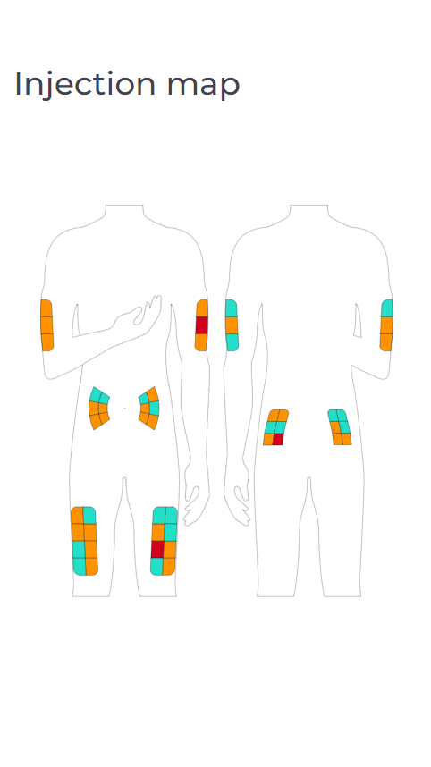
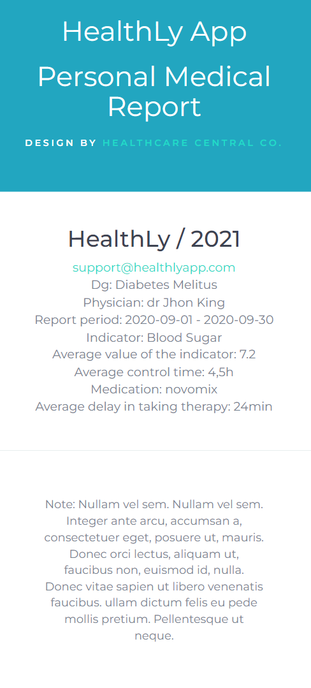
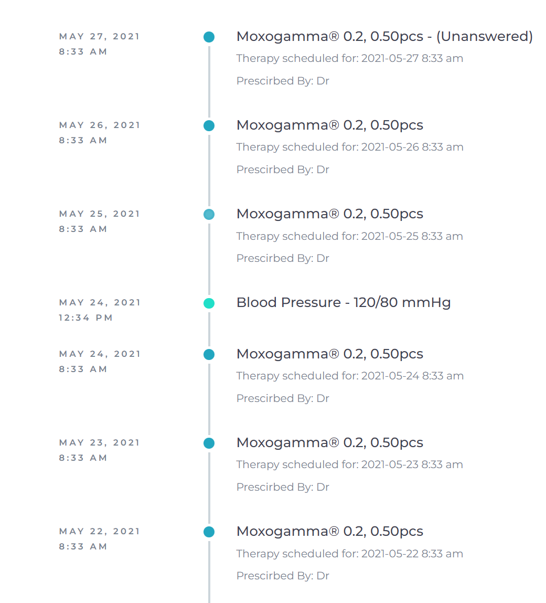
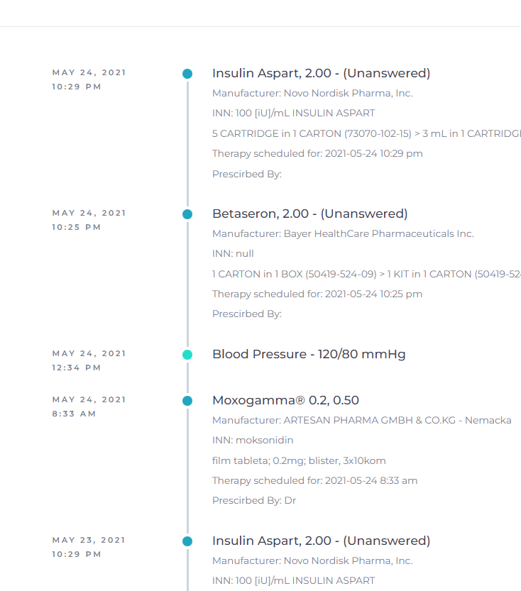
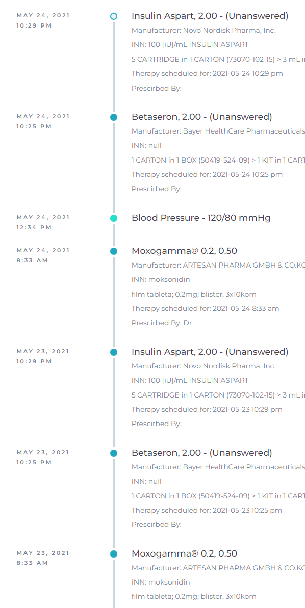
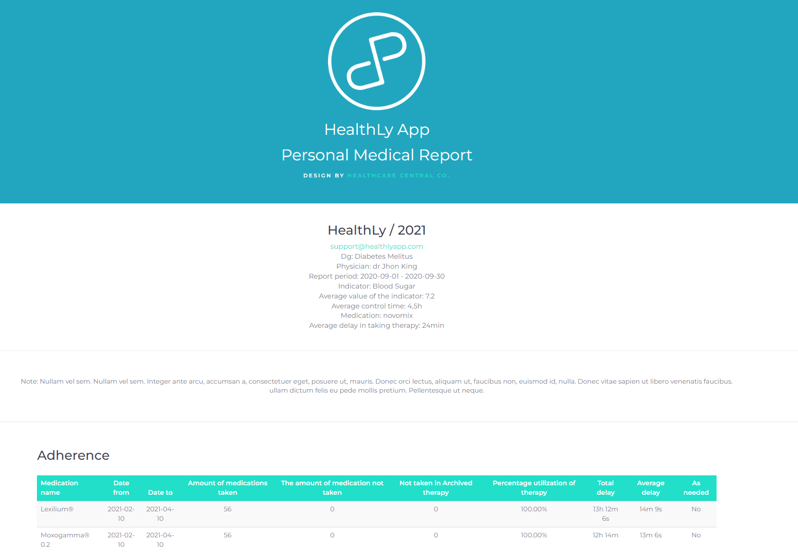

Project information
- Category: Web Development
- Client: HeathCare Central Co.
- Project date: 01 March, 2022
- Technologies Used:: HTML, CSS, Vanilla JavaScript
- Project URL: Personal Medical Report
Project details
Design and development of medical reports sent from the application.
Creating and coding medical reports generated within the application. I worked on HTML, CSS, and JavaScript code to display results obtained as JSON from a REST server. These reports, showcasing various aspects of the application, were then sent to clients upon request. I was involved in designing a body map for monitoring injections and creating graphical charts to depict medication usage.